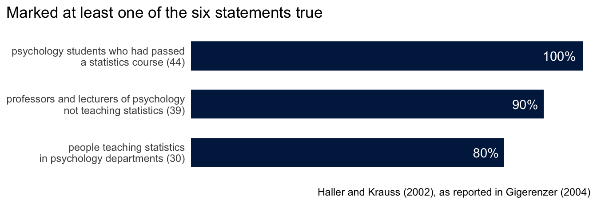
Mindless statistics and sophisticated bigotry
Important note: the second half of this week is about claims that one group of people differs from another. Some of the examples are politically charged and some of the findings are contested. The readings of them here are my own. You are not expected to share them, and a well-argued position I think is wrong can still get full marks. The arithmetic is not contested. It tells you which questions to ask of a group difference before you believe it, whoever is making the claim.
Summary
Cargo cult science is Richard Feynman’s name for research that has the form of science without the substance. Stark and Saltelli say much of statistics is practiced that way, and Gigerenzer calls the result mindless statistics, the first half of this week’s title: a ritual of null hypotheses and 5% levels, performed whatever the question and misunderstood by many of the people who perform it and teach it. Feynman’s first principle is that “you must not fool yourself–and you are the easiest person to fool.”
Correct statistics can fool you too. A correlation across fifty states says the foreign-born have the higher incomes, and a survey of people says the opposite. Averaging removes the variation among people, so a relationship can be far tighter across areas than among the people who live in them, and \(R^2\) is often read as saying more than it does. A decision about a person made from the average of a group they belong to is called statistical discrimination. A small difference in spread between two groups becomes a large ratio far out in the tail, by arithmetic that is correct, and the second half of the title is about an argument that uses that arithmetic. A feed that shows the most extreme item from each of two groups shows more extreme items from the larger group, even when the two groups are alike.
Three numbers in these notes were computed correctly: a \(p\)-value of 0.01, a correlation of 0.52 and an 18% share of a tail. Each answers one question and is easily read as the answer to another.
Cargo cult science
In his 1974 commencement address at Caltech, Richard Feynman described islanders in the South Pacific who had watched airfields operate during the war and wanted the cargo to come back. They built runways, lit fires along them, and put a man in a wooden hut with wooden headphones.
“They’re doing everything right. The form is perfect. It looks exactly the way it looked before. But it doesn’t work. No airplanes land.”
Cargo cult science was his name for research that follows “all the apparent precepts and forms of scientific investigation” and is “missing something essential.”
Cargo-cult statistics
Stark and Saltelli, this week’s first required reading, apply the image to our subject:
“In our experience, many applications of statistics are cargo-cult statistics: practitioners go through the motions of fitting models, computing p-values or confidence intervals, or simulating posterior distributions. They invoke statistical terms and procedures as incantations, with scant understanding of the assumptions or relevance of the calculations, or even the meaning of the terminology. This demotes statistics from a way of thinking about evidence and avoiding self-deception to a formal ‘blessing’ of claims.”
(Emphasis added.) Their short version is “the ritualistic miming of statistics rather than conscientious practice,” and of what the miming achieves they say: “The calculations are as likely to produce valid inferences as cargo cults were to summon cargo planes.”
It “has become the norm in many disciplines, reinforced and abetted by statistical education, statistical software, and editorial policies.” The first two are close to home. Many statistics courses, in their experience, “teach cargo-cult statistics: mechanical calculations with little attention to scientific context, experimental design, assumptions and limitations of methods, or the interpretation of results.” And:
“Statistical software does not help you know what to compute, nor how to interpret the result. … The more ‘powerful’ and ‘user-friendly’ the software is, the more it invites cargo-cult statistics.”
That was written in 2018. What would they say about software that writes the analysis for you?
Their explanation of how this became the norm is historical. “After World War II, governments increased funding for science in response to the assessment that scientific progress is important for national security, prosperity, and quality of life. This increased the scale of science and the pool of scientific labour: science became ‘big science’ conducted by career professionals.” With the scale came the management of it, and “the norms and self-regulating aspects of ‘little science’–communities that valued questioning, craftsmanship, scepticism, self-doubt, critical appraisal of the quality of evidence, and the verifiable, and verifiably replicable, advancement of human knowledge–gave way to current approaches centring on metrics, funding, publication, and prestige.”
Their last section is about what statisticians can do:
“Statisticians can help with important, controversial issues with immediate consequences for society. We can help fight power asymmetries in the use of evidence. We can stand up for the responsible use of statistics, even when that means taking personal risks.”
That means being “vocally critical” of cargo-cult statistics, including “where probabilities are calculated under irrelevant, misleading assumptions,” objecting “whether or not we like the conclusion,” and being “critical even when the abuses involve politically charged issues.” The second half of this week is one.
The first principle
What cargo cult science is missing, Feynman said, is “a kind of scientific integrity, a principle of scientific thought that corresponds to a kind of utter honesty–a kind of leaning over backwards.” If you are doing an experiment, “you should report everything that you think might make it invalid–not only what you think is right about it.” And: “Details that could throw doubt on your interpretation must be given, if you know them.” The idea is to “give all of the information to help others to judge the value of your contribution.”
“The first principle is that you must not fool yourself–and you are the easiest person to fool.”
One of his examples is last week’s file drawer, in 1974:
“If we only publish results of a certain kind, we can make the argument look good. We must publish both kinds of result. … In other words, publication probability depends upon the answer. That should not be done.”
Another is an experiment he admired. In 1937, as Feynman tells it, a man named Young wanted rats to learn to go in at the third door along from wherever they started. They went straight to the door where the food had been the time before. Young repainted the doors, changed the smell with chemicals, and covered the corridor so that the rats could not see the room. They could still tell. They were going by how the floor sounded, and only when he set the corridor in sand did they have to learn the task. Later experimenters ran rats in the old way and did not cite him, “because he didn’t discover anything about the rats. In fact, he discovered all the things you have to do to discover something about rats.”
He ended with a wish for the graduating class:
“… the good luck to be somewhere where you are free to maintain the kind of integrity I have described, and where you do not feel forced by a need to maintain your position in the organization, or financial support, or so on, to lose your integrity. May you have that freedom.”
The first principle is where one of the course’s lenses starts. You have to choose, so choose, and defend it. Sometimes the mathematics proves that a choice is unavoidable. Pretending it was forced is its own failure. In an analysis the hypothesis, the level, the test and what gets published were all chosen by someone, and not fooling yourself begins with knowing which of them were yours.
The null ritual
Gigerenzer’s name for the same practice is mindless statistics. With Marewski, in this week’s optional reading, he describes its commonest form:
- Set up a null hypothesis of “no mean difference” or “zero correlation.” Do not specify the predictions of your own research hypothesis.
- Use 5% as a convention for rejecting the null. If significant, accept your research hypothesis. Report the result as p < .05, p < .01, or p < .001, whichever comes next to the obtained p value.
- Always perform this procedure.
They call it the null ritual, and add: “Yet the null ritual does not exist in statistics proper.” Fisher’s significance tests and Neyman and Pearson’s hypothesis tests are different theories whose authors disagreed, and in Gigerenzer’s account the ritual is a hybrid that neither would have accepted. Step 1 matters most for us. Last week’s arithmetic needed the power of a test, and without an alternative hypothesis there is no power to compute.
Gigerenzer argues that the ritual survives on illusions about what a significant result means. Try this question, which has been put to students and to their teachers (Oakes 1986; Haller and Krauss 2002; the wording here is shortened from Gigerenzer 2004). A treatment group and a control group have 20 people each, and a \(t\) test on the difference in means gives \(t = 2.7\), \(p = 0.01\). Which of these statements are true?
- The null hypothesis has been disproved.
- You have found the probability that the null hypothesis is true.
- The experimental hypothesis has been proved.
- You can deduce the probability that the experimental hypothesis is true.
- If you reject the null hypothesis, you know the probability that you are making the wrong decision.
- If the experiment were repeated many times, 99% of the repetitions would give a significant result.
None of them is true. A \(p\)-value is the probability of data at least as extreme as those observed, computed on the assumption that the null hypothesis is true: \(P(\text{data} \mid H_0)\). A significance test proves and disproves nothing, so 1 and 3 are false. Statements 2, 4 and 5 are about \(P(H_0 \mid \text{data})\), the probability of a hypothesis, which is a different quantity. Statement 5 is statement 2 again: a rejection is the wrong decision only when the null hypothesis is true. Nor is the probability in statement 5 the level of the test. The level is \(P(\text{reject} \mid H_0)\), and the statement is about \(P(H_0 \mid \text{reject})\), last week’s share of rejections that are false. That share depends on how many of the effects being tested are real and on the power of the tests, and in last week’s examples with \(\alpha = 0.05\) it ran from 0.06 to 0.69. Statement 6 is known as the replication fallacy. The probability that a repeat of the experiment is significant is the power of the test at the true effect, and a \(p\)-value does not tell you that.
Haller and Krauss put the question to students and staff in the psychology departments of six German universities.
Every one of the 44 students, all of whom had passed a statistics course, marked at least one statement true. So did 90% of the 39 professors and lecturers who did not teach statistics, and 80% of the 30 people who taught it. Statement 5 was the most often believed, by about 70% of each group. All six, Gigerenzer notes, “err in the same direction of wishful thinking: They make a p-value look more informative than it is.”
Gigerenzer and Marewski collect cases of the ritual performed where nothing called for it. An Internet study asked “Do you feel there is a difference between altruism and heroism?” and 2,347 people said yes and 58 said no.
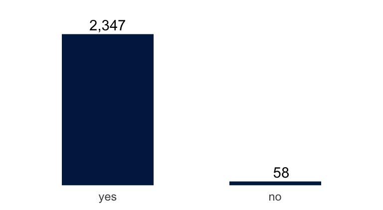
The study’s authors ran a chi-squared test and reported “a significant perceived difference between the ideas of heroism and altruism, \(\chi^2(1) = 2178.60\), \(p < .0001\).” The null hypothesis that gives that number is that people are equally likely to answer yes and no: \[ \frac{(2347 - 1202.5)^2}{1202.5} + \frac{(58 - 1202.5)^2}{1202.5} = 2178.6 . \] One of Gigerenzer and Marewski’s students, whose experimental and control groups had the same mean, ran a \(t\) test and reported that the means did not differ significantly. And:
“One of us reviewed an article in which the number of subjects was reported as 57. The authors calculated that the 95% confidence interval was between 47.3 and 66.7 subjects. … The only numbers with no confidence intervals or p values attached were the page numbers.”
They write: “Statistical methods are not simply applied to a discipline; they change the discipline itself, and vice versa.” A single number used to judge the quality of research, as a significant \(p\)-value is, they call a surrogate, and introducing one “shifts researchers’ goal away from doing innovative science and redirects their efforts toward meeting the surrogate goal.”
Were any of your courses taught the way Stark and Saltelli describe? How were \(p\)-values and confidence intervals taught and assessed in your degree?
Ecological correlation
Many claims about groups of people are made from data on places: for each place, the rate of one thing and the rate of another, with no record of which people have both.
Robinson (1950) used the 1930 US census. For each of the 48 states he took the percentage of residents who were foreign-born and the percentage who were literate, and across the states the two have a correlation of \(0.53\). A correlation whose unit is a place, not a person, is called an ecological correlation. Read as a statement about people, this one says the foreign-born were more likely to be literate than the native-born. Among individuals the correlation was \(-0.11\): the foreign-born were less likely to be literate. They lived in states where the native-born were relatively literate, and that is what the state-level number measured.
Freedman’s report, in this week’s required reading, repeats the example with 1995 survey data: foreign birth against family income of $50,000 or more, for people aged 25 and over. His Figure 1 has one point per state and the regression line through them, \(y = 0.29 + 0.56x\).

Across the 50 states the correlation is \(0.52\). At the individual level it is \(-0.05\): 35% of the native-born had high incomes against 28% of the foreign-born.
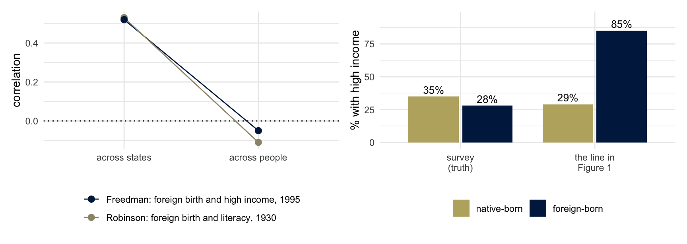
The right-hand panel is what happens when the line is read as a statement about people. A state with no foreign-born residents is at \(x = 0\), where the line is at 29%. A state made up of the foreign-born would be at \(x = 1\), where the line is at \(0.29 + 0.56 = 0.85\). So the regression says 29% of the native-born and 85% of the foreign-born had high incomes. The survey, which asked people, says 35% and 28%. The line is the least squares line and both correlations are correct. Freedman’s name for the mistake:
“The ecological fallacy consists in thinking that relationships observed for groups necessarily hold for individuals.”
This is also an example of Simpson’s paradox: the association among people and the association across the groups they are averaged into have opposite signs.
His reason for the reversal is where people live. “Immigration to the USA tends to concentrate in richer states–California, Hawaii and New York rather than Kentucky, Tennessee and West Virginia.” The native-born in those states have higher incomes too, so the slope of the line measures how states differ. Reading the two ends of the line as the two groups’ rates assumes that neither rate depends on how many immigrants a state has, and the native-born rate does. The section “Ecological regression and the constancy assumption,” near the end of these notes, has the algebra, and the class does a case by hand.
\(R^2\)
The usual one-number summary of a scatter like Figure 1 is \(R^2\). For a regression fitted by least squares, \[ R^2 = 1 - \frac{\sum_i (y_i - \hat y_i)^2}{\sum_i (y_i - \bar y)^2} , \] the share of the variation in \(y\), among the units in the regression, that the fitted values account for. With one predictor it is the square of the correlation: \(0.52^2 = 0.27\) for Freedman’s fifty states, and \((-0.05)^2 = 0.0025\) for the people in them.
If \(Y = \alpha + \beta X + \varepsilon\) with noise variance \(\sigma^2\), the population value is \[ R^2 = \frac{\beta^2 \operatorname{Var}(X)}{\beta^2 \operatorname{Var}(X) + \sigma^2} . \] The slope \(\beta\) says how much \(Y\) changes with \(X\). \(R^2\) depends on \(\beta\), and also on \(\sigma^2\) and on how much \(X\) varies among the units that are in the regression. With \(\beta\) and \(\sigma^2\) held fixed, \(R^2\) can be moved anywhere between 0 and 1 by changing \(\operatorname{Var}(X)\).
Three common misreadings.
“A high \(R^2\) means the model is right.” A straight line fitted to \(y = x^2\), with \(x\) spread evenly between 0 and 1, has an \(R^2\) of \(0.94\), and the model is wrong. A model that is exactly right has a low \(R^2\) when the noise is large: the next section has one with an \(R^2\) of \(0.19\).
“A high \(R^2\) means a strong association, so a cause is more likely.” Bradford Hill’s 1965 list of nine things to consider before deciding that an association is causal begins: “First upon my list I would put the strength of the association.” His examples of strength are ratios of rates: “the mortality of chimney sweeps from scrotal cancer was some 200 times that of workers who were not specially exposed to tar or mineral oils,” and “the death rate from cancer of the lung in cigarette smokers is nine to ten times the rate in non-smokers.” A ratio of rates says how much the outcome changes with the exposure, as a slope does. \(R^2\) does not: the same slope gives any \(R^2\), depending on which units are in the regression. Hill added that none of his nine viewpoints “can be required as a sine qua non,” and that “we must not be too ready to dismiss a cause-and-effect hypothesis merely on the grounds that the observed association appears to be slight.”
“A high \(R^2\) means we can predict each person well.” \(R^2\) is about the units in the regression. If the units are states, it says how well a state’s average can be predicted.
Aggregation and \(R^2\)
In this simulation the relationship among people is the same in every area, and both levels can be seen at once.
set.seed(7)
J <- 50 # areas
n <- 100 # people per area
beta <- 1
area_mean_x <- rnorm(J, 0, 1) # areas differ in X
people <- data.frame(area = rep(1:J, each = n)) |>
mutate(X = area_mean_x[area] + rnorm(J * n, 0, 2), # people differ more
Y = beta * X + rnorm(J * n, 0, sqrt(20)))
areas <- people |>
group_by(area) |>
summarize(X = mean(X), Y = mean(Y))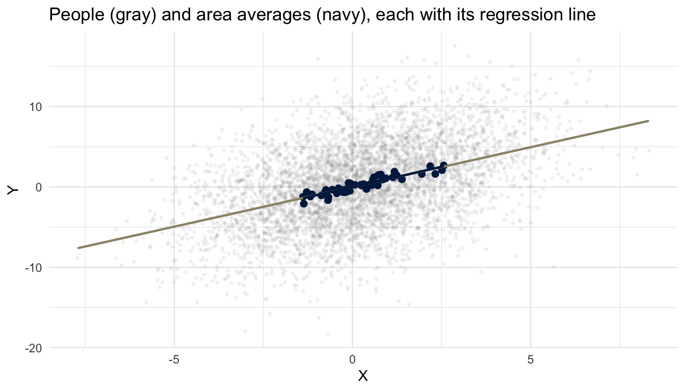
summary(lm(Y ~ X, people))$r.squared[1] 0.1901863summary(lm(Y ~ X, areas))$r.squared[1] 0.8520358coef(lm(Y ~ X, people))[2] X
0.9886547 coef(lm(Y ~ X, areas))[2] X
1.006042 The two lines are almost the same line. One of them accounts for about 20% of the variation and the other for about 85%. A reader who is shown the navy points and their line sees a tight relationship. A reader shown the gray cloud sees a weak one. The slope and the people are the same in both.
Write the model for person \(i\) in area \(j\), with \(n\) people in each area: \[ X_{ij} = B_j + W_{ij}, \qquad Y_{ij} = \alpha + \beta X_{ij} + \varepsilon_{ij} . \] \(B_j\) is the part of \(X\) that everyone in area \(j\) shares, with variance \(\sigma_B^2\) across areas. \(W_{ij}\) is the person’s deviation from it, with mean zero and variance \(\sigma_W^2\), uncorrelated with \(B_j\) and across people. The error \(\varepsilon_{ij}\) has variance \(\sigma^2\), is uncorrelated across people, and has mean zero whatever the values of \(X\) in the area: \(E[\varepsilon_{ij} \mid X] = 0\). That last condition makes the line the conditional mean of \(Y\), and the statements about the slope in this section use it.
The variance of \(X\) across people is \(\sigma_B^2 + \sigma_W^2\), and the population \(R^2\) of the individual regression is the share of the variance of \(Y\) that the line accounts for: \[ R^2_{\text{ind}} = \frac{\beta^2 (\sigma_B^2 + \sigma_W^2)}{\beta^2 (\sigma_B^2 + \sigma_W^2) + \sigma^2}. \]
Now average within each area. The model for the area averages is \[ \bar X_j = B_j + \bar W_j, \qquad \bar Y_j = \alpha + \beta \bar X_j + \bar\varepsilon_j . \] The intercept and the slope are the same as for people. An average of \(n\) uncorrelated terms with a common variance has \(1/n\) of that variance, so \(\operatorname{Var}(\bar W_j) = \sigma_W^2/n\) and \(\operatorname{Var}(\bar\varepsilon_j) = \sigma^2/n\). \(B_j\) is the same for everyone in the area and averaging leaves it alone. Therefore \[ \boxed{\;R^2_{\text{agg}} = \frac{\beta^2 (\sigma_B^2 + \sigma_W^2/n)}{\beta^2 (\sigma_B^2 + \sigma_W^2/n) + \sigma^2/n}\;} \] Multiplying top and bottom by \(n\) gives the individual formula with \(\sigma_B^2\) replaced by \(n\sigma_B^2\). For \(R^2\), averaging \(n\) people per area does what moving the areas \(\sqrt n\) times further apart in \(X\) would do. If the areas differ in \(X\) at all and \(\beta\) is not zero, \(R^2_{\text{agg}}\) equals \(R^2_{\text{ind}}\) at \(n = 1\), rises with \(n\) and tends to 1. If the areas do not differ (\(\sigma_B^2 = 0\), people assigned to areas at random), averaging changes nothing.
In the simulation, \(\beta = 1\), \(\sigma_B^2 = 1\), \(\sigma_W^2 = 4\), \(\sigma^2 = 20\) and \(n = 100\): \[ R^2_{\text{ind}} = \frac{5}{5 + 20} = 0.20, \qquad R^2_{\text{agg}} = \frac{1.04}{1.04 + 0.20} = 0.84 . \] The simulated values above differ from these by sampling variation in fifty areas.
The area regression estimates the same \(\beta\), without bias. Averaging did not change the slope. It divided the error variance by \(n\) and the variance of \(X\) by less, so \(R^2\) rose. A tight fit across area averages is not evidence of a strong relationship among people.
Set the three misreadings against the simulation. The line through the people is the model that generated them, and its \(R^2\) is \(0.19\). The effect of \(X\) is the same at both levels, with an \(R^2\) of \(0.19\) at one and \(0.85\) at the other. No person’s \(Y\) became easier to predict: given their \(X\), the prediction is off by about \(\sqrt{20} = 4.5\) whichever line is used.
This is how Hill’s strength criterion and the ecological regression are reconciled. His strength is the strength of a cause’s effect on the units it acts on, and his examples were people: sweeps, smokers. A causal effect, if it exists, is observable among those concrete units, and not only after aggregation. An association that appears only after averaging was made by the averaging, which removes the variation within areas and leaves the slope alone. In the simulation the \(R^2\) of \(0.20\) among people and \(0.84\) across their averages is one effect, measured twice; neither number is the strength of the effect, which is the slope.
Area effects
The model assumed that nothing in \(\varepsilon_{ij}\) is shared within an area. Suppose each area also has an effect of its own on \(Y\): \[ \varepsilon_{ij} = u_j + e_{ij}, \qquad \operatorname{Var}(u_j) = \sigma_u^2, \quad \operatorname{Var}(e_{ij}) = \sigma_e^2 , \] with \(u_j\) uncorrelated with the area’s \(X\) values and with the \(e_{ij}\), and the \(e_{ij}\) uncorrelated across people. Averaging removes \(e_{ij}\) and not \(u_j\), so \(\operatorname{Var}(\bar\varepsilon_j) = \sigma_u^2 + \sigma_e^2/n\) and \[ R^2_{\text{agg}} = \frac{\beta^2 (\sigma_B^2 + \sigma_W^2/n)}{\beta^2 (\sigma_B^2 + \sigma_W^2/n) + \sigma_u^2 + \sigma_e^2/n} \;\to\; \frac{\beta^2 \sigma_B^2}{\beta^2 \sigma_B^2 + \sigma_u^2} < 1 . \]
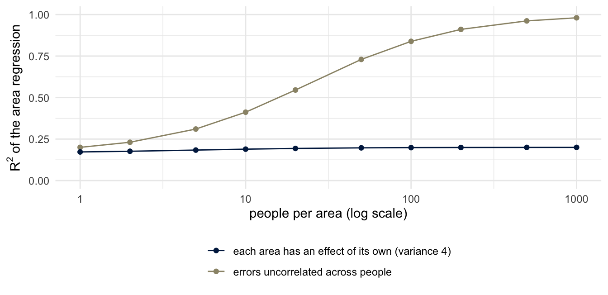
With \(\sigma_u^2 = 4\) and \(\sigma_e^2 = 20\) added to the simulation’s numbers, the individual \(R^2\) is \(5/29 = 0.17\), the aggregate \(R^2\) at \(n = 100\) is \(1.04/5.24 = 0.20\), and its limit is \(0.2\). For every \(n\) above 1 the aggregate \(R^2\) is the larger of the two when \[ \frac{\sigma_B^2}{\sigma_B^2 + \sigma_W^2} > \frac{\sigma_u^2}{\sigma_u^2 + \sigma_e^2}, \] that is, when \(X\) is more clustered by area than the errors are, and the smaller when the inequality is reversed. So aggregation can raise the magnitude of a correlation a great deal, or a little, or lower it. A high aggregate \(R^2\) says that between areas the unexplained variation is small next to the explained variation. It does not say that areas have no effect of their own, and it says nothing about how well \(X\) predicts a person. If \(u_j\) is correlated with \(B_j\), the area regression’s slope is biased as well. That is Freedman’s case: the states with more immigrants are the richer states.
people_u <- people |>
mutate(Y = Y + rep(rnorm(J, 0, 2), each = n)) # add an area effect
areas_u <- people_u |> group_by(area) |> summarize(X = mean(X), Y = mean(Y))
summary(lm(Y ~ X, people_u))$r.squared[1] 0.1750122summary(lm(Y ~ X, areas_u))$r.squared[1] 0.2676506With fifty areas the simulated aggregate value moves around its population value of \(0.20\) by about \(0.1\) from run to run.
Statistical discrimination
The fifty states were groups of people, and the fallacy was to read a number about the groups as a number about their members. The same step can be a decision. An employer, a lender or an insurer who cannot see what they would like to know about a person uses the average of a group the person belongs to. Economists call this statistical discrimination (Phelps 1972; Arrow 1973), and contrast it with discrimination that comes from dislike of a group.
How much does a group’s average say about a member? Take two groups of equal size whose values have the same spread, with means \(d\) standard deviations apart. The share of all the variance that group membership accounts for is \[ R^2 = \frac{d^2}{d^2 + 4} , \] which the class derives. In the figure \(d = 0.5\), and the share is 6%.
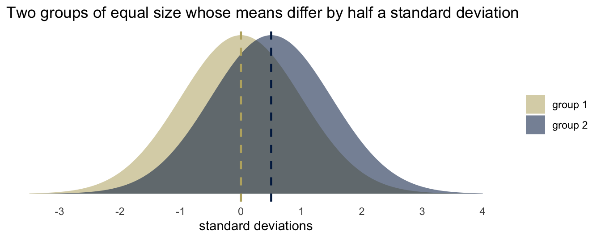
Take one person from each group at random. If the values are normal, the difference between the two is normal with mean \(d\) and variance 2, so the person from the group with the lower mean has the higher value with probability \(\Phi(-d/\sqrt 2)\), which is \(0.36\) when \(d = 0.5\).
A rule that always prefers the person from the group with the higher mean picks the lower of the two people in 36% of such pairs. The errors fall on the people who differ from their group’s average. A group’s average can also be the result of past exclusion. If a group was kept out of an occupation, its average experience of that occupation is lower. A decision made from that average keeps its members out, and the average stays where it was.
Is an aggregate claim about a group ever a claim about a member of it? An insurer who prices a driver by age acts as if it is, and so does a doctor who quotes a survival rate to a patient. Which of the two would you defend?
Means, spreads and tails
In 1962 the mathematician Jacob Schwartz described a weakness of mathematics:
“… the simple-mindedness of mathematics–its willingness, like that of a computing machine, to elaborate upon any idea, however absurd; to dress scientific brilliancies and scientific absurdities alike in the impressive uniform of formulae and theorems. Unfortunately however, an absurdity in uniform is far more persuasive than an absurdity unclad.”
“The result, perhaps most common in the social sciences, is bad theory with a mathematical passport.”
A group difference can be a difference in averages, in spreads, or in tails, and the three are reported as if interchangeable. Hyde and Mertz (2009), this week’s required reading, use the state mathematics tests that every US state must give under No Child Left Behind, ten states and over seven million students. Their Table 1 gives, for each grade from 2 to 11, the standardized mean difference between boys and girls, \(d\), which runs from \(-0.02\) to \(0.06\), and the variance ratio, boys’ variance over girls’, which runs from \(1.11\) to \(1.21\). The first number is about averages and says the two distributions overlap almost completely: by the formula of the last section, a \(d\) of \(0.06\) makes group membership account for less than a tenth of one percent of the variance in scores. The second is about spreads: a variance ratio of \(1.2\) is a difference of about 10% in standard deviations.
Their Figure 1 is what a difference in spread does in the tail. Two normal distributions with the same mean and a variance ratio of \(1.2\) nearly coincide. Four standard deviations out they do not; the inset enlarges the two curves between 3.8 and 4.2.
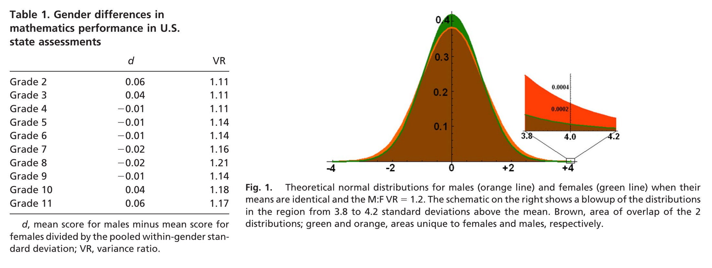
With normal distributions, equal means, a variance ratio of 1.2 and two groups of equal size, the people beyond a cutoff divide as follows. Cutoffs are in pooled standard deviations (the square root of the average of the two variances), as in the paper.
| cutoff (pooled SDs above the mean) | 2 | 3 | 4 | 5 |
|---|---|---|---|---|
| share of everyone who is beyond it | 1 in 44 | 1 in 700 | 1 in 26,000 | 1 in 2.2 million |
| ratio, higher-variance group to lower | 1.5 | 2.5 | 4.7 | 10.8 |
| lower-variance group’s share of those beyond it | 39.3% | 28.9% | 17.5% | 8.5% |
Hyde and Mertz give the last two entries of the bottom row as 18% and 9%, and call those two cutoffs the 1-in-20,000 and 1-in-one million levels. With \(d = 0.05\) and a variance ratio of \(1.12\), which they take as representative of Table 1, they compute a ratio of \(1.34\) above the 95th percentile and \(2.15\) above the 99.9th, a 68 to 32 split.
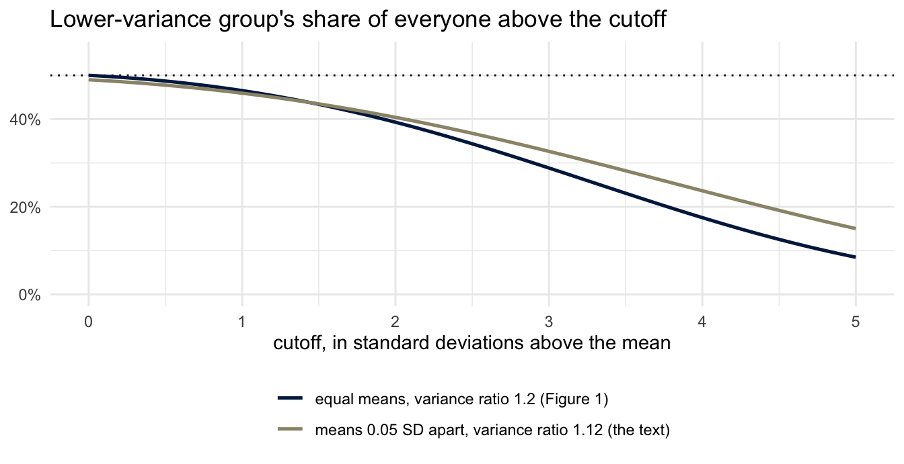
The share depends heavily on two inputs: the variance ratio, and how far out the cutoff is. On one curve the lower-variance group is 18% of those beyond the cutoff at about 4 standard deviations; on the other, not until about 4.6.
The variance argument
The paragraph of Hyde and Mertz you read sets out the Greater Male Variability Hypothesis: boys’ scores vary more than girls’, which could put more boys than girls at the highest levels of performance with no difference in means. As a statement of it they quote Lawrence Summers, speaking at a National Bureau of Economic Research conference on 14 January 2005:
“There are issues of intrinsic aptitude, and particularly of the variability of aptitude, and that those considerations are reinforced by what are in fact lesser factors involving socialization and continuing discrimination. It’s talking about people who are 3½, 4 standard deviations above the mean in the one-in-5,000, one-in-10,000 class. Even small differences in the standard deviation will translate into very large differences in the available pool substantially out.”
The arithmetic of the last sentence is Figure 1’s, and it is right: with a variance ratio of 1.2, four standard deviations out, one group is 82% of the pool. From that number to a statement about who holds which jobs takes a second step, a third is needed for “intrinsic,” and a fourth for any one person. Only the first is a calculation.
1. From test scores to a share of a tail. The calculation takes normal curves, fitted where the data are, and uses them four standard deviations out, where almost no data are, and where a test with a top score cannot follow a normal curve. It takes the variance ratio and the mean difference to be those of the population in question, and the two groups to be the same size.
2. From a share of a tail to a share of a profession. The test has to measure what the work needs. The profession has to draw from beyond that cutoff. And among people beyond it, the two groups have to enter the profession at the same rate, which is what the quotation calls a lesser factor. Hyde and Mertz make their own use of this step: with the values they take as representative of Table 1 and a cutoff at the 99.9th percentile, the calculation gives a field that is 32% women, and they set that beside the 18% of US engineering PhDs then awarded to women.
3. From a share to “intrinsic.” The variance ratio has to be a property of the two groups and not of the country, the test or the year. The reading’s Table 2 is about this one. Its left-hand column is the variance ratio in the 2003 PISA mathematics test, by country, plotted beside it.

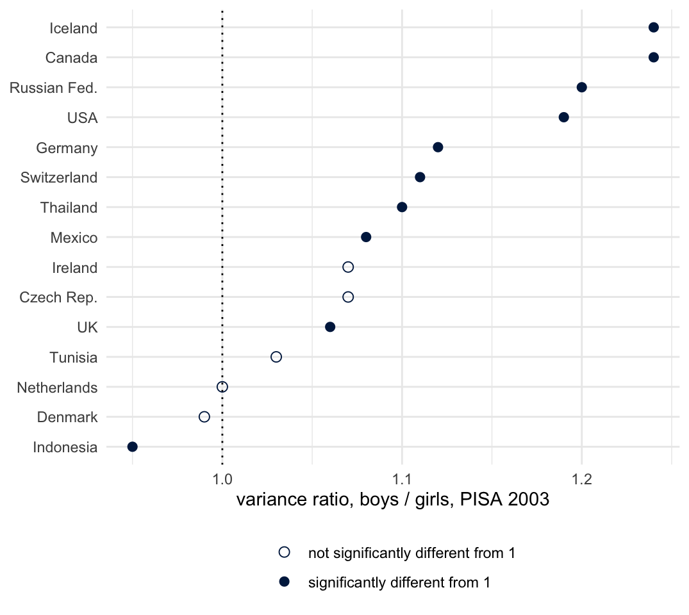
The ratio is above 1 in most countries, significantly so in 34 of the 40 that took part according to Machin and Pekkarinen (2008), whose figures the table draws on, and it is \(0.99\) in Denmark, \(1.00\) in the Netherlands and \(0.95\) in Indonesia. In Minnesota’s data the ratio of boys to girls above the 99th percentile was \(2.06\) for white students, which the paper calls close to its theoretical prediction, and \(0.91\) for Asian-American students, in the same state’s test. In the 2003 PISA data, Iceland, Thailand and the United Kingdom had as many or more girls than boys above the 99th percentile, although their variance ratios in Table 2 are \(1.24\), \(1.10\) and \(1.06\): the ratio in the tail is not set by the variance ratio alone. The Johns Hopkins talent search found 13 boys for every girl scoring 700 or more on the SAT mathematics section among the children under 13 it tested in 1980 to 1982, and 2.8 to 1 by 2005; the paper notes that its sample is voluntary and has changed over time. And the paper’s Figure 2 gives women’s share of US mathematics PhDs by decade: 15% in the 1920s and 1930s, 5% in the 1950s, 30% in 2000 to 2008.
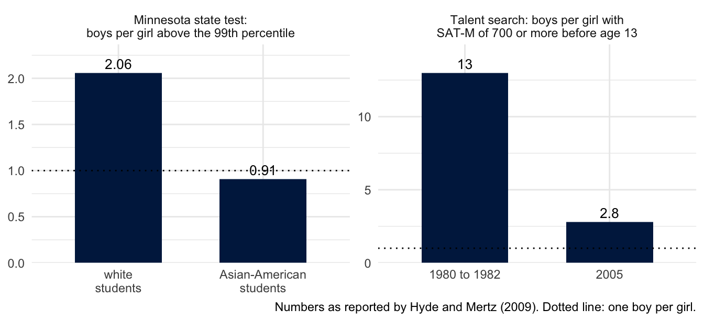
4. From a share of a profession to a person. No number in this section takes this step. A variance ratio, a tail ratio and a share of a pool are properties of two distributions. A share of a pool says how many members of each group are beyond a cutoff. It does not say whether one applicant is, and judging the applicant by it is the statistical discrimination of the last section.
Hyde and Mertz go further and report that across countries the share of girls in the tail is correlated with measures of gender equity. That is a correlation across countries, an ecological correlation, and the authors read it as a cause. Stark and Saltelli ask statisticians to object “whether or not we like the conclusion.” Ask of this 32% and this correlation what you asked of Summers’s sentence.
Whether the argument earns the second half of this week’s title, and at which step, is for you to argue.
The largest of \(n\)
Summers’s “one-in-10,000 class” is the far end of a distribution. A feed that ranks posts shows the far end of a distribution too: the posts that scored highest on something. The highest of \(n\) scores has a distribution of its own.
Let \(M_n\) be the largest of \(n\) independent draws from a distribution with distribution function \(F\). Then \[ P(M_n \le x) = P(\text{all } n \text{ draws} \le x) = F(x)^n , \] with density \(n F(x)^{n-1} f(x)\). Two cases you can do by hand.
- Uniform on \((0,1)\). \(F(x) = x\), so \(E[M_n] = \int_0^1 n x^n\,dx = \dfrac{n}{n+1}\). The largest of 9 draws is 0.9 on average; of 99, 0.99.
- Exponential with mean 1. The smallest of \(n\) exponentials exceeds \(t\) when all of them do, with probability \(e^{-nt}\), so it is exponential with rate \(n\) and mean \(1/n\). An exponential that has already exceeded \(t\) exceeds it by a fresh exponential (lack of memory), so the \(n - 1\) that remain exceed the smallest by independent exponentials, and the gap to the next smallest is exponential with rate \(n - 1\). Continuing, the largest is the sum of the gaps, and \[ E[M_n] = \frac1n + \frac1{n-1} + \cdots + 1 \approx \ln n + 0.577 . \] A feed ten times as large raises the expected most extreme item by about 2.3.
For the normal there is no closed form. If \(m_n\) is the expected largest of \(n\) standard normals, the expected largest of \(n\) draws with mean \(\mu\) and standard deviation \(\sigma\) is \(E[M_n] = \mu + \sigma\, m_n\). \(m_n\) grows like \(\sqrt{2 \ln n}\), but that is an asymptotic statement and it overstates at the sizes we care about: for \(n = 100\) the value is about \(2.5\) and the approximation gives \(3.0\). Use the table.
| \(n\) | 1 | 10 | 100 | 1,000 | 10,000 |
|---|---|---|---|---|---|
| \(m_n\) | 0 | 1.54 | 2.51 | 3.24 | 3.85 |
| \(\sqrt{2\ln n}\) | 0 | 2.15 | 3.03 | 3.72 | 4.29 |
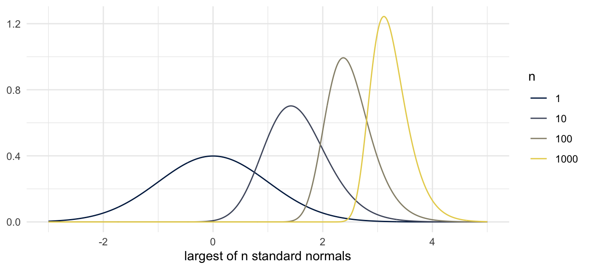
The most extreme item depends on the center, the spread and the number of items. Two groups whose typical items are identical can differ in their most extreme items because one group is larger or because one is more varied, and no difference between their centers is needed. A standard deviation 10% larger (a variance ratio of 1.21) raises the expected largest of 10,000 from \(3.85\) to \(4.24\).
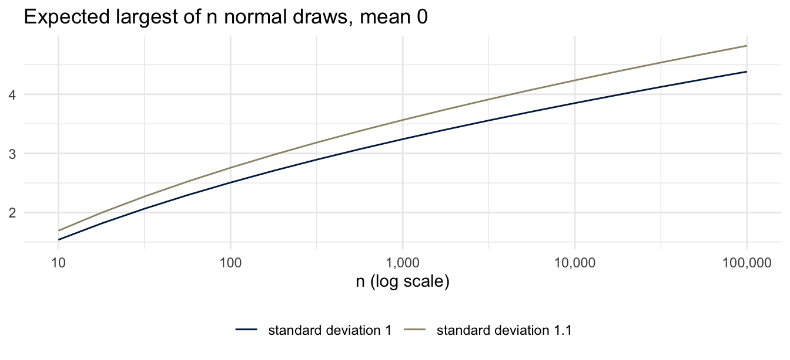
The tail probability compounds: \(P(M_n > c) = 1 - F(c)^n\). A standard normal exceeds 3 with probability \(0.00135\). Among a thousand of them, \[ P(M_{1000} > 3) = 1 - (1 - 0.00135)^{1000} \approx 1 - e^{-1.35} = 0.74 . \] A group with a thousand posts a day supplies one beyond three standard deviations on about three days in four; a group with a hundred, on about one day in eight. Both groups draw from the same distribution.
Suppose two groups post items whose extremity is an independent draw from the same continuous distribution, one group 100 a day and the other 10,000, and a feed shows the single most extreme item from each. The most extreme of all 10,100 items is equally likely to be any one of them, so the larger group’s item is the more extreme of the two with probability \(10{,}000/10{,}100 = 0.99\). On about one day in a hundred the smaller group’s item is the more extreme.
set.seed(4)
small_group <- rnorm(100) # 100 posts, all from the same distribution
large_group <- rnorm(10000) # 10,000 posts, same distribution
c(shown_from_small = max(small_group), shown_from_large = max(large_group))shown_from_small shown_from_large
2.330322 3.408656 mean(replicate(2000, max(rnorm(100)))) # compare with the table[1] 2.50105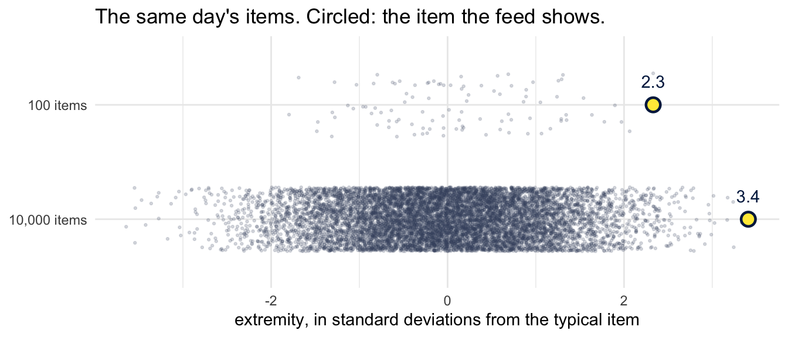
Selecting the most extreme is the significance filter with the threshold replaced by a maximum. Last week you saw \(Z\) only when it passed \(c\); here you see the item only when it beat the other \(n - 1\). Both produce a sample whose mean is far from the population’s.
Rathje, Van Bavel and van der Linden (2021) analyzed 2.7 million Facebook and Twitter posts from news media and members of Congress. Posts about the political out-group “were shared or retweeted about twice as often as posts about the in-group,” and each additional out-group term was associated with a 67% increase in the odds of a share. So the items that reach you from the other side have been selected before a feed ranks anything, by the people who chose to share them.
Calculation and interpretation
| The calculation gives | It is read as | |
|---|---|---|
| \(p = 0.01\) | how often data this extreme occur when the null hypothesis is true | the chance that the null hypothesis is true |
| a correlation of 0.52 | a relationship across fifty states | a relationship among the people in them |
| an 18% share of a tail | a share of the tail area under two normal curves | the “available pool” for a profession |
Each number was computed correctly. None of them gets from the middle column to the right-hand one without more: for the \(p\)-value, the power of the test and how many of the effects being tested are real; for the fifty states, data on people, or an assumption about them; for the tail, steps 2 and 3 of the variance argument. These are what Feynman called the “details that could throw doubt on your interpretation.”
Lenses
You have to choose, so choose, and defend it. “Pretending it was forced is its own failure.” In the null ritual nobody chose the null hypothesis, the level or the test, and nobody has to defend them: its third step is “Always perform this procedure.” In the variance argument the first step is a correct calculation, and the steps after it are stated as if they followed from it.
What are we optimizing or predicting? A state’s rate, or a person’s. A group’s average, or one of its members. The regression on fifty states predicts a state. Statistical discrimination has a person to predict and uses a group’s average.
Who is in the data? Under the two normal curves, about 1 person in 26,000 is four standard deviations out, and the curves were fitted to everyone else. The variance ratios came from fifteen-year-olds in one country or another and ran from 0.95 to 1.24. The ratios in the tail came from one state’s students and from the children who entered a talent search. A feed shows one item in 10,000.
And why? Who finds it useful that a group average can be read as a description of a member, or that a feed shows the most extreme item from each group?
Who benefited from that choice being invisible? And would a more competent analyst have chosen differently?
Put both questions to the null ritual and to the variance argument. For the null ritual, Stark and Saltelli’s answer to the first is that cargo-cult statistics “is effective at getting weak work published.” For the variance argument, the calculation was done competently. Would a more competent analyst have taken steps 2 and 3?
For the class
The class starts with the two studies of infants. Its problems on slopes, ecological regression and bounds use the other three sections. None of the four was in the lecture.
Two studies of infants
You skimmed one of two papers. Connellan, Baron-Cohen, Wheelwright, Batki and Ahluwalia (2000) showed 102 newborns, mean age 37 hours, a face and a mobile, one at a time, and recorded how long each baby looked at each. Alexander, Wilcox and Woods (2009) showed 30 infants aged 3 to 8 months a doll and a toy truck side by side and tracked their eyes. Each paper measured more than one thing and could compare boys and girls on each. The question here is where each comparison was placed: which got the abstract, which got a figure, which got a table, and which got a sentence of text or nothing.
The abstract of Connellan and colleagues says that the boys “showed a stronger interest in the physical-mechanical mobile while the female infants showed a stronger interest in the face,” and ends: “The results of this research clearly demonstrate that sex differences are in part biological in origin.” Table 1 sorts each baby into face preference, mobile preference or no preference. Table 2 gives each sex’s mean percentage of looking time at each stimulus, four means with their standard deviations.
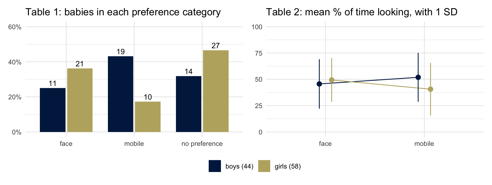
The text reports two tests on Table 2: boys against girls on the mobile, and girls on the face against girls on the mobile. The other two comparisons the same table allows, boys against girls on the face and boys on the face against boys on the mobile, are not reported. The largest group of girls in Table 1 is the 27 of 58 with no preference; the text’s sentence about them is that female babies “either have no preference or prefer the real face.” The evidence offered for the abstract’s last sentence is a chi-squared test on Table 1 (\(p = 0.016\)) and an interaction in Table 2 (\(p = 0.02\)).
In Alexander and colleagues, the eye tracker gave two measures, total looking time and number of fixations. The analysis of variance on looking time did not find a statistically significant sex difference or sex by toy interaction; looking time has three sentences of text and no figure. The analysis of fixations found an interaction, and fixations are what Figure 1 shows and what the abstract reports: the two comparisons that reached significance, of the four the paper set out to test. On the left is the paper’s Figure 1. On the right are the looking times, drawn from the means and standard deviations in the paper’s text in the form the paper used for fixations.
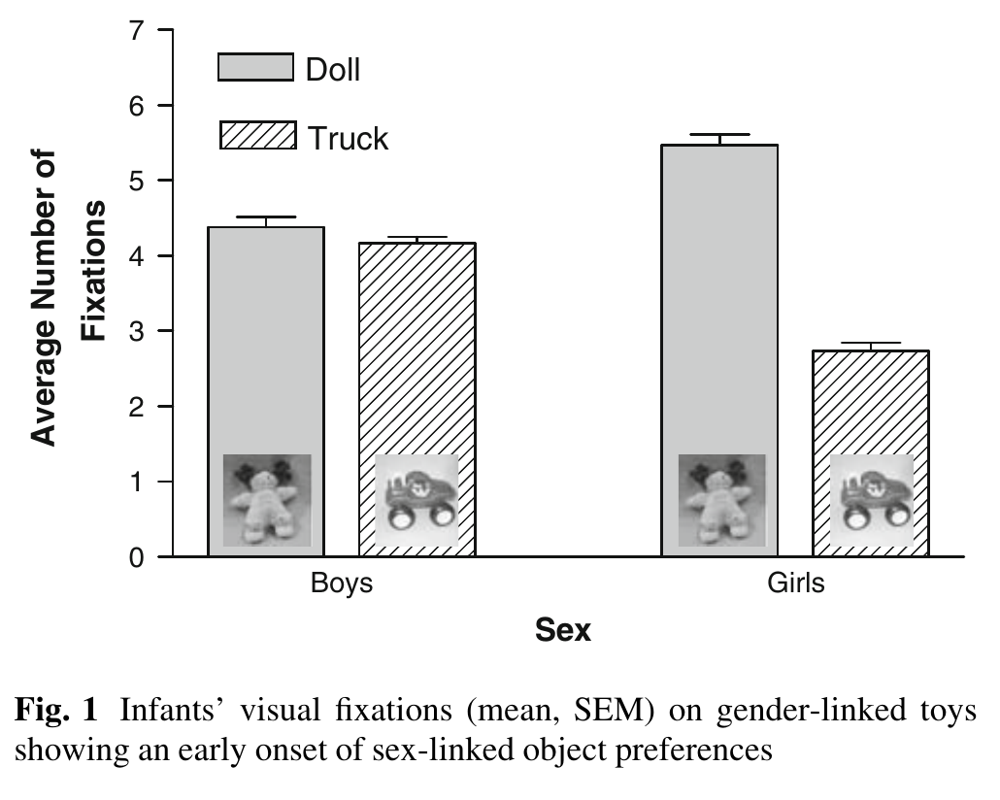
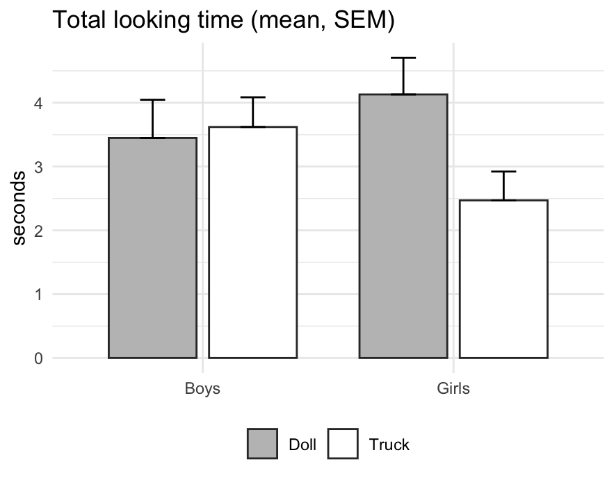
If you compared the paper’s text with its Figure 1 you may have noticed that they disagree about one comparison: the text says that boys fixated more on the truck than on the doll, a difference that was not significant. An erratum the journal published in 2010 corrects the sentence. Boys fixated more on the doll, as the figure shows.
None of this says that either paper’s result is wrong, and this course makes no claim about whether either has held up. A paper reports some of the comparisons its data allow, and where each one goes, abstract, figure, table, sentence or nowhere, was somebody’s choice. Seeing that some comparisons were given more room than others does not show that the choice was made after looking at the results. In the first paper, 102 babies completed testing; 51 others did not, for crying, falling asleep or fussing.
Two slopes
In the simulation under “Aggregation and \(R^2\)” the slope was the same across areas and across people. The two slopes can differ, and can have opposite signs. For person \(i\) in area \(j\), split both variables into the area average and the deviation from it, \(X_{ij} = \bar X_j + (X_{ij} - \bar X_j)\) and likewise for \(Y\). The deviations average to zero within each area, so the cross terms vanish and \[ \boxed{\;\operatorname{Cov}(X, Y) = \operatorname{Cov}_B + \operatorname{Cov}_W\;} \qquad \operatorname{Var}(X) = \operatorname{Var}_B + \operatorname{Var}_W , \] where \(\operatorname{Cov}_B\) is the covariance between the area averages \(\bar X_j\) and \(\bar Y_j\), with each area weighted by its size, and \(\operatorname{Cov}_W\) is the average of the covariances within areas, weighted the same way. (\(\operatorname{Var}_B\) is the variance of the area averages, which in the model of “Aggregation and \(R^2\)” is \(\sigma_B^2 + \sigma_W^2/n\).) The slope across area averages is \(b_B = \operatorname{Cov}_B / \operatorname{Var}_B\) and the pooled slope within areas is \(b_W = \operatorname{Cov}_W / \operatorname{Var}_W\). The slope across everyone is \[ b_{\text{all}} = \frac{\operatorname{Cov}_B + \operatorname{Cov}_W}{\operatorname{Var}_B + \operatorname{Var}_W} = \lambda\, b_B + (1 - \lambda)\, b_W, \qquad \lambda = \frac{\operatorname{Var}_B}{\operatorname{Var}_B + \operatorname{Var}_W} . \] It is a weighted average of the two slopes, and the weight on the slope between areas is the share of the variance of \(X\) that lies between areas. The three slopes agree when \(b_B = b_W\). When \(b_B\) and \(b_W\) have opposite signs, the sign of \(b_{\text{all}}\) is the sign of \(\operatorname{Cov}_B + \operatorname{Cov}_W\), and knowing the two signs is not enough to say which it is. With \(\lambda = 0.1\), \(b_B = -0.5\) and \(b_W = 0.5\) give \(b_{\text{all}} = 0.40\); the same \(\lambda\) and \(b_W\) with \(b_B = -6\) give \(-0.15\). With a small \(\lambda\), \(b_{\text{all}}\) takes the sign of \(b_B\) only when \(b_B\) is much the steeper of the two.
Gelman, Shor, Bafumi and Park (2007) worked through the US case. In the 2000 and 2004 presidential elections the richer states voted Democratic and the poorer states Republican, which produced years of commentary about affluent liberals and working-class conservatives. Within states, richer voters were more likely to vote Republican, and the same was true across all voters in the country. The authors’ account is the weighted average above: “Income varies far more within states than average income does between states. Consequently, it is the within-state rather than the between-state effect of income that dominates the national patterns.”
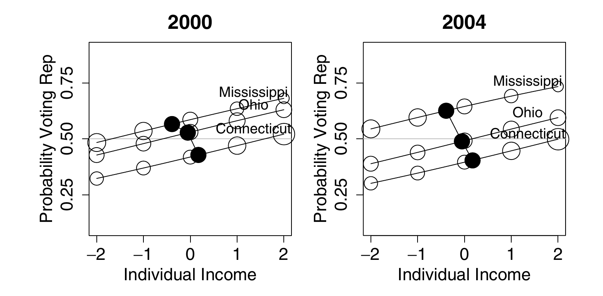
The paper’s caption for this figure begins “The paradox is no paradox.” A simulation with the same structure shows the voters as well as the lines.
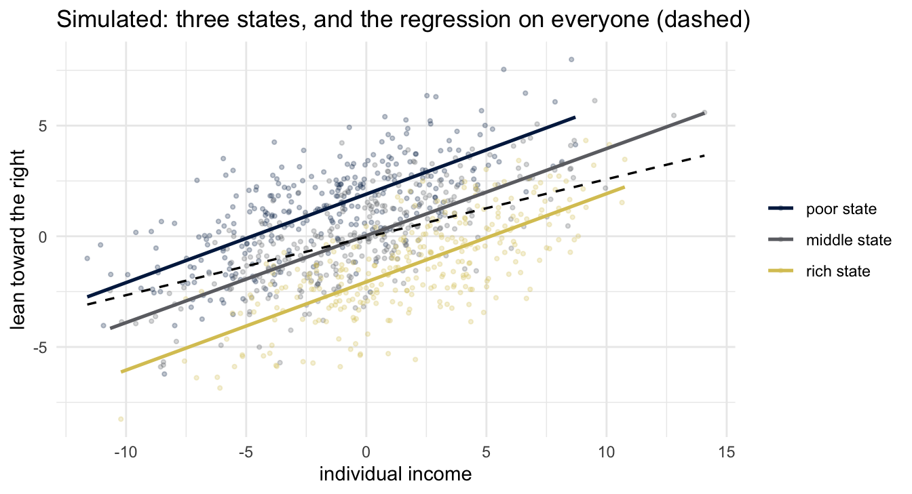
The dashed line is the regression on everyone. The simulation was built with \(\lambda = 0.14\), a slope between the three state averages of \(-0.6\) and a slope within states of \(0.4\), so the slope for everyone should be about \(0.14(-0.6) + 0.86(0.4) = 0.26\), and the dashed line’s slope is \(0.26\). One slope describes states and the other describes voters.
Ecological regression and the constancy assumption
You want a group’s rate of something, and what you have is area-level data: for each area \(i\), the fraction \(x_i\) of its people who belong to the group, and the fraction \(y_i\) of the same people who have the outcome. (Areas are indexed by \(i\) in this section and the next, as in Freedman’s report.) Fit \[ y_i = a + b x_i + \varepsilon_i \] by least squares. The height of the line at \(x = 0\) is an area with no group members, so \(\hat a\) is read as the rate among everyone else; the height at \(x = 1\), \(\hat a + \hat b\), as the group’s rate. This is ecological regression (Goodman 1953, 1959). Freedman’s one sentence on its use: it “has been widely used in voting rights litigation in the USA,” where the group is defined by ethnicity, the outcome is a vote, and the ballot is secret.
Write \(p_i\) for the rate among the group’s members in area \(i\) and \(q_i\) for the rate among everyone else. Neither rate is observed. Then \[ y_i = p_i x_i + q_i (1 - x_i) \] holds by accounting, provided \(x_i\) and \(y_i\) are shares of the same people. (A share of adults and a share of votes cast are shares of different people, and the identity fails for them.) The reading of the line is correct under the constancy assumption: the two rates do not vary systematically with the group’s share of the area. If \(p_i = p\) and \(q_i = q\) in every area, then \(y_i = q + (p - q) x_i\) and the regression recovers \(q\) from its intercept and \(p\) from intercept plus slope. The assumption is about both rates. Area data can sometimes contradict it (a curved scatter, a fitted rate above 1, bounds that rule it out) but cannot confirm it.
When constancy fails, the estimate is wrong in a direction you can compute. In Freedman’s example the regression says 29% and 85% and the truth is 35% and 28%; his explanation is that “the incomes of the native-born increase systematically with fraction of foreign-born in the state,” because immigration concentrates in richer states. Suppose the group’s rate is constant, \(p_i = p\), and everyone else’s rate climbs with the group’s share, \(q_i = q_0 + \gamma x_i\). Substituting, \[ y_i = q_0 + (p - q_0 + \gamma)\, x_i - \gamma x_i^2 . \] When the shares are small the last term is small, the fitted slope is close to \(p - q_0 + \gamma\), and the line at \(x = 1\) is close to \(p + \gamma\): the gradient in everyone else’s rate has been added to the group’s rate. How much of \(\gamma\) is added depends on how the shares are distributed: in the two-area example below it is about seven tenths.
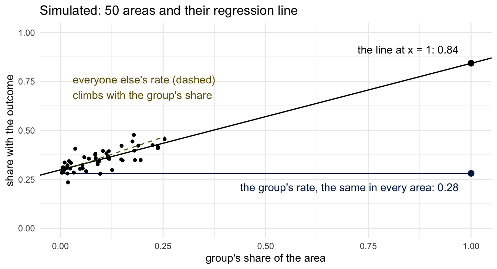
The figure is a simulation with that structure, fifty areas of equal size and a little noise in everyone else’s rate, with numbers chosen so that the fitted line resembles Freedman’s: \(p = 0.28\), \(q_0 = 0.29\), \(\gamma = 0.7\). The regression reports the group’s rate as 0.84 when it is 0.28 in every area, and everyone else’s rate as 0.30 when over all areas it is 0.36. Freedman says that the trouble is not that the line has been extended beyond the data: “the same sort of reversal can occur even with a full spectrum of \(x\)-values. The issue is the disaggregation, not the range of the data.”
A version small enough to do by hand: two areas of equal size at \(x = 0.1\) and \(x = 0.2\), with \(p = 0.28\), \(q_0 = 0.30\) and \(\gamma = 0.5\). The area rates are \(0.343\) and \(0.376\), the line through them is \(y = 0.31 + 0.33x\), and the group’s rate it reports is \(0.64\) against a truth of \(0.28\). It reports everyone else’s rate as \(0.31\); over the two areas it is \(0.374\). This error is a bias. It does not shrink as areas get larger or more numerous: more data with the same assumption gives the same wrong answer with a smaller standard error. The constancy assumption is the kind Stark and Saltelli mean when they write of “the mechanical application of methods without understanding their assumptions, limitations, or interpretation.” It is stated nowhere in the regression output, and in the figure above nothing in the output shows that it has failed.
Freedman’s Table 2, in section 5 of the report, which you were not asked to read, sets four answers side by side.
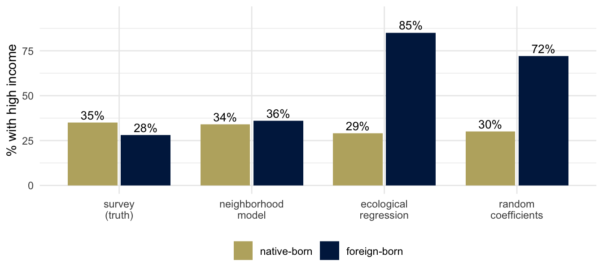
The neighborhood model assumes the opposite of constancy: everyone in an area has the area’s rate, \(\hat p_i = \hat q_i = y_i\), whatever group they belong to. For the income data it estimates 34% and 36% against the truth of 35% and 28%, far closer than ecological regression’s 29% and 85%. The fourth method is the random-coefficients model of King (1997), in which the two rates vary from area to area but are drawn from one distribution whatever the area’s makeup: a version of the constancy assumption, as Freedman says. Freedman does not conclude that the neighborhood model is right. “In some contexts, of course, the neighborhood model proves deficient. If the data are incomplete so estimation is needed, it will be unclear which model if any is giving the right answers.” Every one of these models is compatible with the fifty points, so the points cannot show which assumption holds.
The method of bounds
Freedman’s section 4, optional in the reading list.
There is one thing the area data do settle without any assumption. Freedman’s example: in Washington state in 1995, 7.9% of adults were foreign-born and 34.4% had high incomes. Write \(p\) for the high-income rate among the foreign-born and \(q\) for the rate among the native-born. The accounting identity \[ 0.079\,p + 0.921\,q = 0.344 \] is one equation in two unknowns. But \(p\) is between 0 and 1, so \(q\) is trapped: \[ q = \frac{0.344 - 0.079\,p}{0.921} \in \left[\frac{0.344 - 0.079}{0.921},\ \frac{0.344}{0.921}\right] = [0.288,\ 0.374]. \]
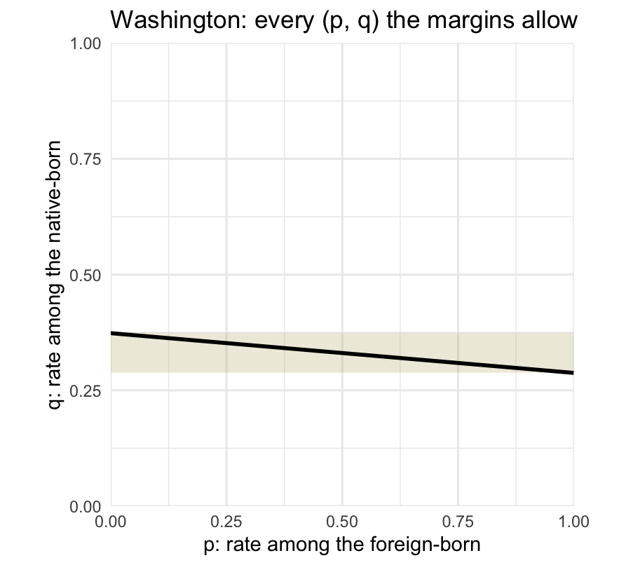
Every point on the line segment reproduces the two percentages we were given. Its slope is \(-0.079/0.921\), nearly flat, because the foreign-born are a small share of the state: \(q\) is pinned to a narrow band and \(p\) can be anything from 0 to 1. In general, for area \(i\), \[ q_i \in \left[\max\!\left(0, \frac{y_i - x_i}{1 - x_i}\right),\ \min\!\left(1, \frac{y_i}{1 - x_i}\right)\right], \qquad p_i \in \left[\max\!\left(0, \frac{y_i - (1 - x_i)}{x_i}\right),\ \min\!\left(1, \frac{y_i}{x_i}\right)\right]. \] These are the Duncan–Davis bounds (1953). The interval for \(p_i\) has width \(\min(x_i,\, 1 - x_i,\, y_i,\, 1 - y_i)/x_i\), and the interval for \(q_i\) has the same numerator over \(1 - x_i\). So the bounds on a group’s rate are the whole of \([0, 1]\) when the group is smaller than both the share of people with the outcome and the share without it, as the foreign-born are in Washington. They are not always wide for a small group. If a group is 5% of an area and 2% of the area’s people have the outcome, the group’s rate is at most \(0.02/0.05 = 0.4\).
Any estimate narrower than the bounds gets its extra precision from an assumption. Freedman notes that “in many applications, the bounds are too broad to be informative,” which is why people reach for a model.
Readings
As announced. There are several, but they are short, and part of the work is deciding when to scan and when to slow down.
Required
- Stark and Saltelli, Cargo-cult statistics and scientific crisis (Significance 15, 2018, 40–43). Four pages, open access; read it in full.
- Hyde and Mertz, Gender, culture, and mathematics performance (PNAS 106, 2009, 8801–8807; free full text at Europe PMC). Read the first paragraph of the section “Do Gender Differences Exist Among the Mathematically Talented?” and understand Figure 1 and Table 2.
- Freedman, Ecological Inference and the Ecological Fallacy (Berkeley Statistics Technical Report 549, 1999). Sections 1 to 3; section 4, the method of bounds, is optional. Read the PDF at this link; a much shorter 2002 entry by Freedman with a similar title circulates online and has none of the worked example.
- One of two psychology studies, as announced: Connellan, Baron-Cohen, Wheelwright, Batki and Ahluwalia, “Sex differences in human neonatal social perception” (Infant Behavior and Development 23, 2000, 113–118), or Alexander, Wilcox and Woods, Sex Differences in Infants’ Visual Interest in Toys (Archives of Sexual Behavior 38, 2009, 427–433). Skim it with attention to the data and the statistical analysis, and form your own guess about whether its results would be reproduced.
Optional
- Rathje, Van Bavel and van der Linden, Out-group animosity drives engagement on social media (PNAS 118, 2021).
- Gigerenzer and Marewski, Surrogate Science: The Idol of a Universal Method for Scientific Inference (Journal of Management 41, 2015, 421–440; LSE library access). The phrase “mindless statistics” is Gigerenzer’s, from a 2004 paper of that title.
Cited in the text and not assigned: Feynman, “Cargo Cult Science” (1974); Schwartz, “The Pernicious Influence of Mathematics on Science” (1962); Gigerenzer, “Mindless statistics” (Journal of Socio-Economics 33, 2004, 587–606), which reports Oakes (1986) and Haller and Krauss (2002); Franco, Blau and Zimbardo (2011), as quoted by Gigerenzer and Marewski; Robinson (1950); Bradford Hill, “The Environment and Disease: Association or Causation?” (Proceedings of the Royal Society of Medicine 58, 1965, 295–300); Phelps, “The Statistical Theory of Racism and Sexism” (American Economic Review 62, 1972, 659–661); Arrow, “The Theory of Discrimination” (in Discrimination in Labor Markets, 1973); Goodman (1953, 1959); Duncan and Davis (1953); King, A Solution to the Ecological Inference Problem (1997); Gelman, Shor, Bafumi and Park (2007); Hyde, Lindberg, Linn, Ellis and Williams (2008), whose data Hyde and Mertz’s Table 1 summarizes; Machin and Pekkarinen (2008), whose variance ratios their Table 2 reports; the erratum to Alexander and colleagues, Archives of Sexual Behavior 39 (2010), 816.